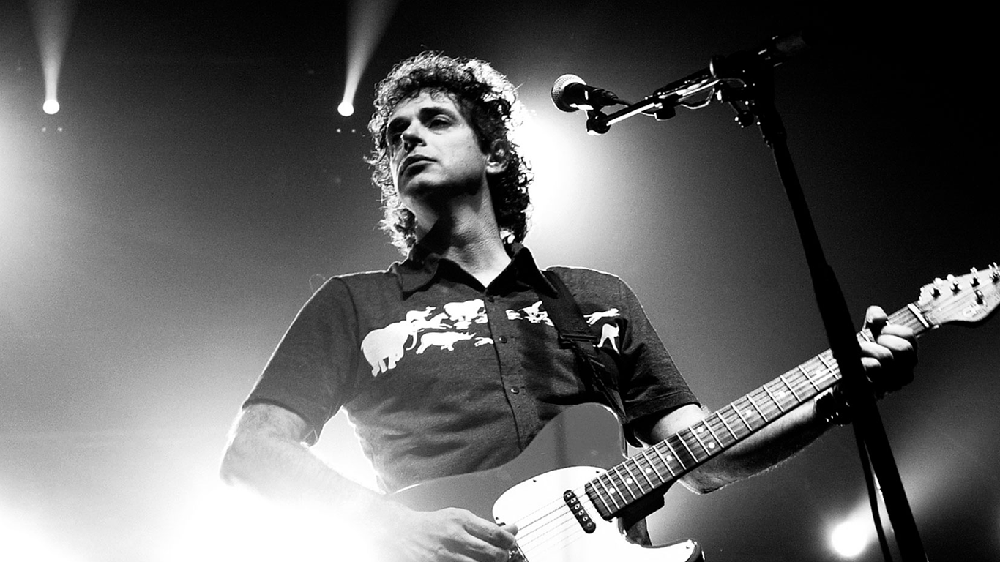

Gustavo Cerati
Gustavo Adrián Cerati fue un músico, cantautor y productor discográfico argentino que obtuvo reconocimiento internacional por haber sido el líder, vocalista, compositor y guitarrista de la banda de rock Soda Stereo. Parte de la prensa especializada y músicos lo consideran como uno de los artistas más influyentes del rock latinoamericano. Nació en barracas, buenos Aires, el 11 de agosto de 1959 y falleció el 4 de septiembre del 2014.

Gustavo perteneció a la banda Soda Stereo.
Canciones más famosas
- De Música Ligera
- Lago en el Cielo
- Trátame Suavemente
- Cuando paso el Temblor